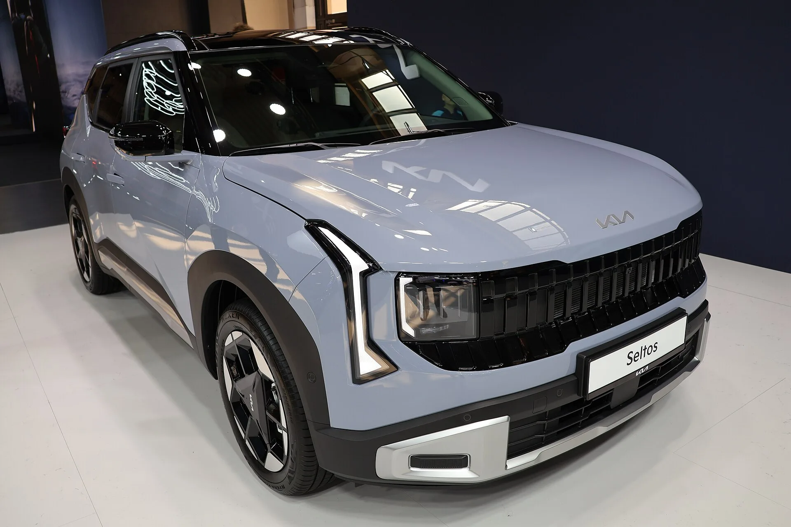
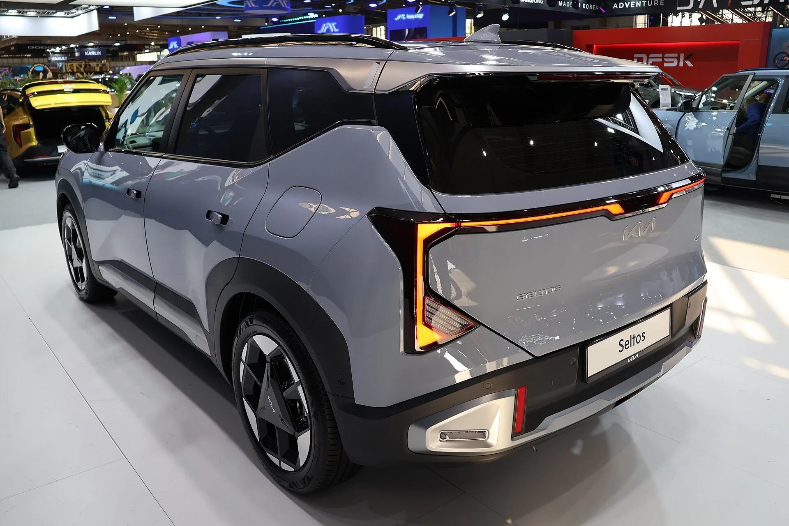
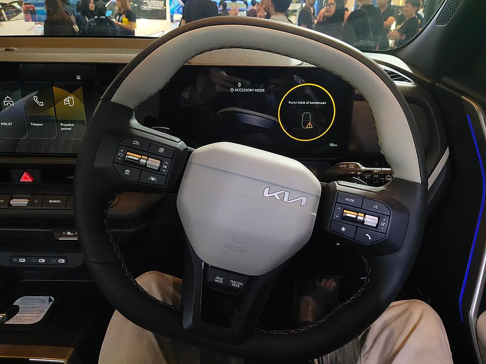
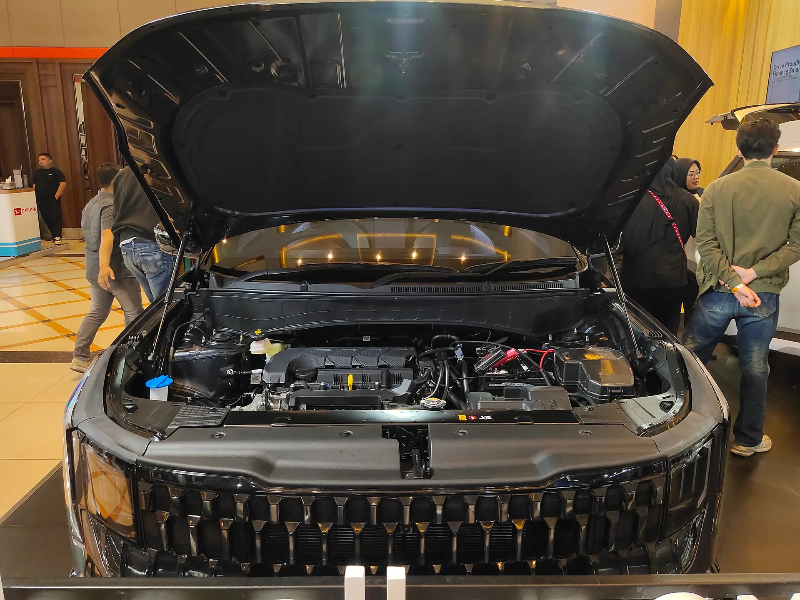
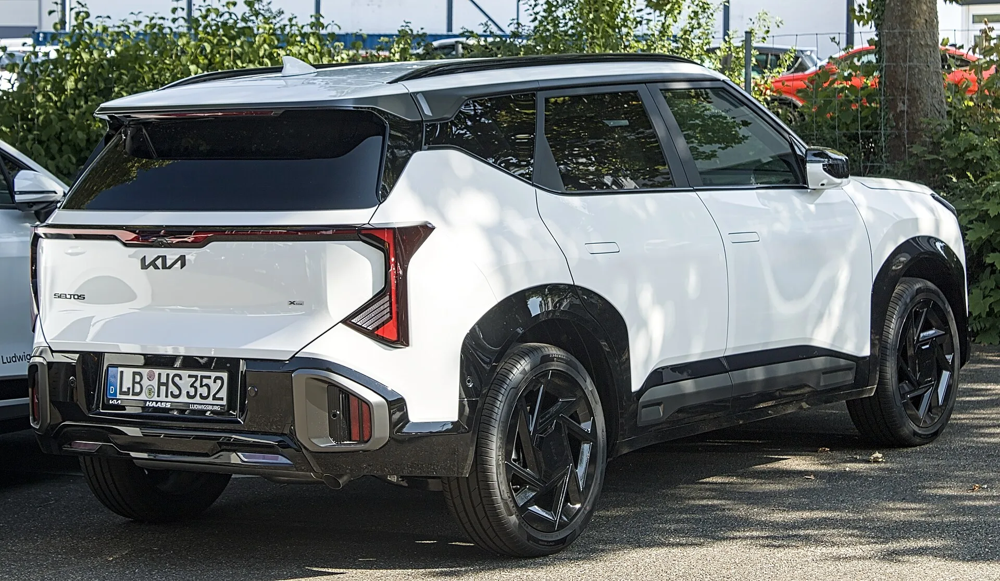

▲ 6년 만에 완전변경한 기아 2세대 셀토스(SP3). 소형 SUV 최초로 하이브리드 파워트레인을 추가했다 ⓒ Peżot, Wikimedia Commons (CC BY-SA 4.0)
순수 전기차 캐즘(수요 정체)에 소형 SUV 시장까지 위축되는 상황에서, 기아가 꺼내 든 카드는 결국 하이브리드였다.
기아는 지난 1월 27일 소형 SUV '디 올 뉴 셀토스' 국내 계약을 시작하며 본격적인 판매에 돌입했다. 2019년 1세대 출시 이후 국내에서만 33만여 대가 팔린 핵심 모델의 6년 만의 완전변경이다. 이번 신형의 가장 큰 변화는 소형 SUV 세그먼트 최초로 추가된 하이브리드 파워트레인, 그리고 커진 차체에서 나오는 2열 거주성 개선이다. 지금까지 확인된 제원과 가격, 경쟁 모델 비교까지 정리했다.
1. 출시 배경 — 33만 대 팔린 스테디셀러, 왜 다시 만들었나
셀토스는 기아의 소형 SUV 라인업에서 상징적인 모델이다. 2019년 1세대가 나온 뒤 국내에서만 누적 33만여 대가 팔리며 스토닉·니로와 함께 기아 소형 SUV 삼각편대를 이뤄 왔다. 문제는 시간이었다. 경쟁 모델인 현대 코나가 이미 하이브리드를 갖추고 세대교체를 마친 사이, 셀토스는 6년째 같은 플랫폼과 파워트레인을 유지하며 상품성 격차가 벌어지고 있었다.
기아는 이 격차를 완전변경으로 메우기로 했다. 신형 셀토스는 2025년 12월 10일 온라인 월드 프리미어로 처음 공개됐고, 생산은 인도 공장에서 가장 먼저 시작해 2026년 1월 2일 인도 시장에 세계 최초로 판매됐다. 국내에서는 이보다 조금 늦은 1월 27일부터 계약을 시작했으며, 유럽은 4월 15일, 중국은 8월 13일에 순차적으로 투입됐다. 북미 시장에는 가솔린 모델이 먼저 들어가고, 하이브리드는 뒤이어 추가될 예정이다.
| 시장 | 시점 | 비고 |
|---|---|---|
| 글로벌 공개 | 2025년 12월 10일 | 온라인 월드 프리미어 |
| 인도 | 2026년 1월 2일 | 세계 최초 판매, 현지 생산 |
| 대한민국 | 2026년 1월 27일 | 계약 개시 |
| 유럽 | 2026년 4월 15일 | |
| 중국 | 2026년 8월 13일 | |
| 북미 | 2026년 중(가솔린) / 4분기 말~2027년(하이브리드) | 순차 투입 |
기아는 신형 셀토스를 앞세워 올해 국내에서만 5만 5,000대, 글로벌로는 43만 5,000대 판매를 목표로 잡았다. 소형 SUV 시장이 정체된 상황에서도 하이브리드 추가와 상품성 강화로 반등을 노리겠다는 전략이다.

▲ 신형 셀토스 후면부. 전면과 통일감 있는 스타맵 리어 콤비네이션 램프가 적용됐다 ⓒ Peżot, Wikimedia Commons (CC BY-SA 4.0)
2. 디자인·제원 — 그릴은 더 넓어지고, 차체는 더 커졌다
외관에서 가장 먼저 눈에 띄는 건 한층 넓고 강인해진 라디에이터 그릴이다. 수직 패턴으로 채운 타이거노즈 그릴을 중심으로 기아 시그니처인 '스타맵 라이팅' 주간주행등을 적용해, 멀리서도 셀토스임을 알아볼 수 있는 정체성을 강화했다. 후면부에도 스타맵 리어 콤비네이션 램프를 적용해 전면과 통일감을 맞췄다.
차체는 전면부 디자인 변화보다 실질적인 체감이 큰 부분이다. 기존 모델 대비 전장 40mm, 휠베이스 60mm, 전폭 30mm가 늘었다. 이 확대분은 고스란히 2열 공간으로 이어져 2열 헤드룸이 14mm, 레그룸이 25mm 넓어졌다. 소형 SUV의 고질적인 약점으로 꼽히던 2열 거주성을 정면으로 개선한 셈이다.
| 항목 | 2세대(SP3) | 1세대 대비 |
|---|---|---|
| 전장 | 4,430mm | +40mm |
| 전폭 | 1,830mm | +30mm |
| 전고 | 1,600~1,620mm | 휠 사이즈(16~19인치)별 차이 |
| 휠베이스 | 2,690mm | +60mm |
| 2열 헤드룸 | 확대 | +14mm |
| 2열 레그룸 | 확대 | +25mm |
실내도 대대적으로 바뀌었다. 파노라믹 디스플레이와 신규 UX가 적용됐고, 소재와 마감 고급감을 끌어올렸다는 평가가 나온다. 플랫폼은 현대 코나(SX2), 기아 니로(SG2)와 같은 K3 플랫폼을 기반으로 하며, 전장 기준으로 코나보다 45~80mm 더 길다.

▲ 신형 셀토스 실내. 파노라믹 디스플레이와 새로운 디자인의 스티어링 휠, 통합 계기판이 적용됐다 ⓒ M Raisfath, Wikimedia Commons (CC BY 4.0)
▲ 최상위 트림인 X-Line. 기존 그래비티 트림을 대체해 신설됐다 ⓒ Charles, Wikimedia Commons (CC0)
3. 하이브리드 파워트레인 — 소형 SUV 최초, 무엇이 다른가
이번 완전변경의 핵심은 역시 하이브리드다. 기아는 신형 셀토스에 1.6 하이브리드와 1.6 가솔린 터보, 총 2가지 파워트레인을 마련했다. 그중 하이브리드는 소형 SUV 세그먼트에서 기아 최초로 도입되는 파워트레인이다. 1.6L 자연흡기 엔진에 32kW 전기모터를 조합해 시스템 출력 141마력을 낸다. 엔진 토크는 14.7kgf·m, 모터 토크는 170Nm이며, 변속기는 6단 DCT를 맞물렸다. 복합연비는 19.5km/ℓ까지 나온다.
가솔린 터보 모델은 1,598cc 직렬 4기통 엔진에 8단 자동변속기를 조합해 193마력, 27kgf·m의 토크를 낸다. 두 파워트레인 모두 전륜구동 기반으로 운영된다.
| 구분 | 1.6 하이브리드 | 1.6 가솔린 터보 |
|---|---|---|
| 엔진 | 1.6L 자연흡기 + 32kW 전기모터 | 1,598cc 직렬 4기통 터보 |
| 시스템 출력 | 141마력 | 193마력 |
| 토크 | 엔진 14.7kgf·m + 모터 170Nm | 27kgf·m |
| 변속기 | 6단 DCT | 8단 자동 |
| 복합연비 | 최대 19.5km/ℓ | 미확정(가솔린 수준) |
| 구동방식 | 전륜구동 | 전륜구동 |
전동화 특화 기능도 다수 추가됐다. 내비게이션 정보를 활용해 회생 제동량을 자동으로 조절하는 '스마트 회생 제동 3.0'과 배터리 충전량을 최적 제어하는 '계층형 예측 제어 시스템'을 탑재해 효율성을 끌어올렸다. 소형 SUV 최초로 220V 전원을 차 안에서 쓸 수 있는 '실내 V2L'도 적용해 캠핑이나 차박 등 아웃도어 활용성을 높였고, 엔진 공회전 없이 정차 중 공조 장치를 쓸 수 있는 '스테이 모드'도 지원한다.
📍 하이브리드가 늘어나는 이유
순수 전기차 수요가 예상보다 더디게 늘면서, 완속 충전 부담과 항속거리 불안이 적은 하이브리드로 소비자 선호가 옮겨가는 흐름이 뚜렷하다. 소형 SUV 시장 역시 예외가 아니어서, 코나에 이어 셀토스까지 하이브리드를 갖추며 소형 SUV급 하이브리드 경쟁이 본격화되는 모양새다.

▲ 신형 셀토스의 엔진룸. 1.6L 엔진에 전기모터를 결합한 하이브리드 시스템이 소형 SUV 세그먼트 최초로 적용됐다 ⓒ M Raisfath, Wikimedia Commons (CC BY 4.0)
4. 트림 구성과 가격 — 그래비티 대신 X-Line, 얼마부터 살 수 있나
트림은 트렌디·프레스티지·시그니처·X-Line 4단계로 구성된다. 기존 최상위 트림이었던 그래비티가 빠지고 X-Line이 새로 편성됐다. 가격은 1.6 가솔린 터보가 2,477만원부터, 1.6 하이브리드가 2,898만원부터 시작한다. 1.6T 기준으로 이전 모델보다 트렌디 211만원, 프레스티지 231만원, 시그니처 244만원, X-Line 311만원 올랐는데, 상위 트림일수록 인상폭이 커졌다. LED 헤드램프·9에어백·고도화된 주행보조(ADAS) 기본화 등 다양한 편의·안전 사양이 기본 장착으로 전환된 영향이 크다.
| 트림 | 1.6 가솔린 터보 | 1.6 하이브리드 |
|---|---|---|
| 트렌디 | 2,477 | 2,898 |
| 프레스티지 | 2,840 | 3,208 |
| 시그니처 | 3,101 | 3,469 |
| X-Line | 3,217 | 3,584 |
트림별 세부 기본 품목과 옵션 구성은 기아 공식 가격표에서 확인할 수 있다. 기아 공식 가격표 바로가기

▲ X-Line 트림 후면. 기존 그래비티를 대체한 최상위 트림으로, 가솔린 3,217만원·하이브리드 3,584만원부터 시작한다 ⓒ Alexander Migl, Wikimedia Commons (CC BY-SA 4.0)
5. 경쟁 모델 비교 — 코나·트레일블레이저·티볼리와 뭐가 다른가
가장 직접적인 경쟁자는 역시 현대 코나다. 셀토스와 같은 K3 플랫폼을 쓰면서도 이미 하이브리드 라인업을 갖추고 있었지만, 이번 신형 셀토스는 전장을 코나보다 45~80mm 더 키워 체급에서 차이를 뒀다. 쉐보레 트레일블레이저와 KGM 티볼리는 아직 하이브리드가 없어, 소형 SUV 세그먼트 안에서 전동화 경쟁은 사실상 현대차그룹 두 모델 위주로 좁혀지는 모습이다.
| 모델 | 하이브리드 출력 | 복합연비 | 비고 |
|---|---|---|---|
| 기아 셀토스 | 141마력 | 19.5km/ℓ | 2026년 신규 추가 |
| 현대 코나 | 141마력대 | 17~19km/ℓ대 | 선발주자, K3 플랫폼 공유 |
| 쉐보레 트레일블레이저 | 하이브리드 미보유 | - | 가솔린 터보만 판매 |
| KGM 티볼리 | 하이브리드 미보유 | - | 가솔린만 판매 |
가격 면에서는 셀토스 하이브리드가 2,898만원부터 시작해, 동급 하이브리드 SUV 사이에서도 진입 장벽이 크게 높지 않은 편이다. 여기에 차체를 키워 2열 공간까지 개선했다는 점은 준중형 SUV 구매를 고민하던 소비자까지 끌어들일 수 있는 요인으로 꼽힌다.
✅ 신형 셀토스, 이것만은 확인하자
· 하이브리드는 소형 SUV 세그먼트 기아 최초 도입, 복합연비 19.5km/ℓ(공식 발표 기준)
· 가격은 가솔린 2,477만원, 하이브리드 2,898만원부터(트렌디 기준)
· 그래비티 트림은 사라지고 X-Line이 신설됨
· 북미 시장에는 하이브리드가 가솔린보다 늦게, 4분기 말~2027년경 투입될 예정
6. 요약
기아가 2019년 1세대 출시 이후 6년 만에 완전변경한 '디 올 뉴 셀토스'의 국내 판매를 시작했다. 2025년 12월 글로벌 공개, 2026년 1월 인도 최초 판매에 이어 국내에서는 1월 27일부터 계약을 받고 있다.
가장 큰 변화는 소형 SUV 세그먼트 최초로 추가된 1.6 하이브리드 파워트레인이다. 시스템 출력 141마력, 복합연비 19.5km/ℓ를 확보했고, 스마트 회생 제동 3.0·실내 V2L 등 전동화 특화 기능도 새로 담았다. 차체도 전장·휠베이스·전폭을 모두 키워 소형 SUV의 약점으로 꼽히던 2열 거주성을 개선했다.
가격은 가솔린 터보가 2,477만원부터, 하이브리드가 2,898만원부터 시작한다. 그래비티 트림이 빠지고 X-Line이 신설됐으며, 경쟁 모델인 현대 코나와의 하이브리드 경쟁, 그리고 아직 하이브리드가 없는 트레일블레이저·티볼리와의 격차가 어떻게 벌어질지가 관전 포인트다.